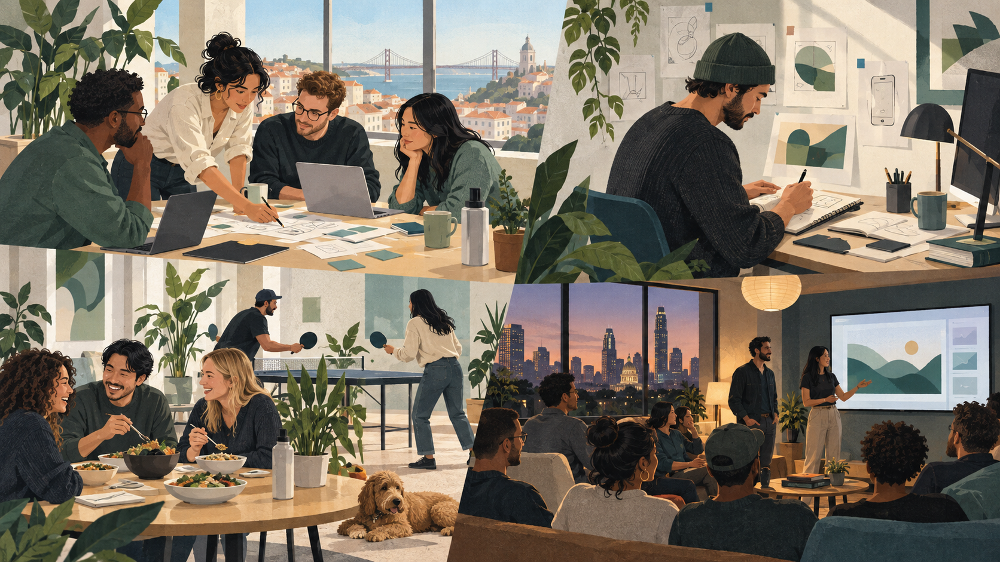

Small teams run products that customers rely on. There is no bench: the work you own is visible, consequential, and close to the people who use it.
Where you fit in.
As a new team member, you support a product in a fast-moving, technically demanding space—where customers depend on reliability, clear judgment, and people who stay close to the work.
Onboarding starts with the product, its customers, its operating systems, and the position it holds in the market. The aim is not to learn a role in isolation; it is to understand the whole problem well enough to make the next useful call.
HOW ROLES GROW
Apply for the level you are at, not the one you want.
Learn
You build context, ask good questions, and make the next task clearer than you found it.
Own
You take responsibility for a defined part of the product and see it through with the people around you.
Lead
You connect a problem to an outcome, bring others with you, and improve how the team works.
Shape
You make the long-term calls that help a company stay useful as customers and systems change.
WHAT WE LOOK FOR
Behaviours that make small teams work
Write clearly
Much of the work happens in writing. Clear thinking and clear communication are inseparable here.
Move with judgment
When the answer is not obvious, make a call, explain it, and stay close enough to learn from the outcome.
Say the number
Bring the difficult data forward early. Customer and product problems get easier when they are visible.
Finish the work
The final details are part of the job. The team relies on people who carry an outcome through.
Use feedback
Ask for the perspective you are missing, then change something when the evidence calls for it.
Think beyond the next release
The interesting work here compounds. We value people who want to see what their decisions become over time.
LIFE AROUND THE ARCHIPELAGO
Focused work, shared in the open.

Make the work visible
Make room to think
Share what you learn
Spend time together
Plan in the open
Give ideas room
Stay close to the crew
Work through the hard parts
Leave space for the human part
Learn together
Placeholder photography for the kind of working life we are building: focused, collaborative, and human.
WHY JOIN
Small crews give good people more room to matter.
Close to the customer
You see the outcome of a decision in the product and in the conversations around it.
Trusted with the whole problem
Work does not disappear into handovers. Teams own the hard parts through to the result.
Supported by the group
Each company keeps its focus while sharing the platforms and expertise that make better work possible.
HOW WE WORK
A rhythm that keeps the work moving
Start with the signal.Customer feedback, product data, and team context point to the work that matters.
Make the call visible.Write down the decision, the trade-off, and what would prove it wrong.
Ship, learn, repeat.Stay close after launch and let what customers do shape the next move.
What the team says.
A few notes from the people closest to the work.
“The difference is that a decision does not stop at a meeting. You can see it become part of the product, then learn from what customers do with it.”
Product team · TL Groups
“We keep the companies independent on purpose. The shared systems remove busywork; they do not remove the judgement that makes a product worth using.”
Founders’ message · TL Groups
“You are trusted with real work quickly. The support is there when you need it, but the decision stays close to the product and the customer.”
Engineering team · TL Groups
JOIN THE TEAM
Bring your judgment to work that matters.
If you want to take real ownership, stay close to customers, and help build products that last, we would like to hear from you.